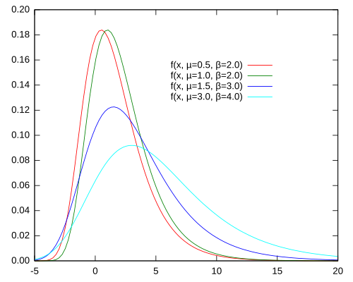

Multinomial Models
Theory
Specification: \(P_{ij}^{y_{ij}}\)
A natural question that arises regarding our log-likelihood models for discrete outcomes is that of model specification. Specifically, how do we select a form for \(F_j (x_{i},\beta)\)?
Suppose we have \(j=1,2,...,m\) alternatives. We can then define the following:
\[U_j = V_j + \varepsilon_j \tag{1}\]
Where:
- \(U_j\) : represents the utility of choosing alternative \(j\)
- \(V_j\) : the deterministic component (comprised of all the possible regressors) for alternative \(j\)
- \(\varepsilon_j\) : random error term – included since all individuals have the alternatives but possibly different utilities for a choice – allows for some randomness
When does an individual prefer alternative \(j\) to alternative \(k\)? Simply when they get more utility from \(j\) than they do \(k\). More formally:
\[ \begin{aligned} \mathbb{P}[y_i = j \mid X_i] &= \mathbb{P}[U_j \ge U_k, \forall_{j \neq k}] \\ &= \mathbb{P}[U_k - U_j \leq 0, \forall_{j \neq k}] \\ &= \mathbb{P}[\varepsilon_k - \varepsilon_j \leq V_k - V_j, \forall_{j \neq k}] \\ &= \mathbb{P}[\widetilde{\varepsilon}_{kj} \leq -\widetilde{V}_{kj} , \forall_{j \neq k}] \end{aligned} \tag{2} \]
Note that in the last step we simply rewrite the difference between alternative \(k\) and alternative \(j\) as \(\tilde{\varepsilon}_{kj}\).
Lets explore this in a 3-choice model:
\[ \begin{aligned} \mathbb{P}[y_i=1 \mid X_i] = \mathbb{P}[\widetilde{\varepsilon}_{31} \leq -\widetilde{V}_{31}, \widetilde{\varepsilon}_{21} \leq -\widetilde{V}_{21} \mid X_i] \end{aligned} \tag{3} \]
This is telling us the same thing as (2): the probability that individual \(i\) chooses alternative \(1\) (given a set of alternatives) is equal to the probability that individual \(i\) prefers alternative \(1\) to both alternative \(3\) as well as alternative \(2\).
We can write this as a joint probability density function of the error terms:
\[ \begin{aligned} = \int_{-\infty}^{-\tilde{V}_{31}} \int_{-\infty}^{-\tilde{V}_{21}} f\left(\tilde{\varepsilon}_{31}, \tilde{\varepsilon}_{21} \right) d \tilde{\varepsilon}_{21} d \tilde{\varepsilon}_{31} \end{aligned} \tag{4} \]
Although this is the correct theoretical specification, an issue arises when we try to compute this for more alternatives. Imagine we have a set of 20 alternatives; we would have a 19-degree integration which would be computationally impossible to evaluate in any finite time period. Thus, we need to simplify this integration somehow.
Distribution Assumption of the Errors
To simplify the model, a key assumption we need to make is on the distribution of the error terms; specifically we need to assume that the errors follow a Type 1 Extreme Value Distribution (Gumbel Distribution):
\[f\left(\varepsilon_j \right) \sim Gumbel\left( \mu, \beta \right)\]
Which indirectly makes assumptions on the differenced errors (from our 3-alternative example above):
\[f\left(\tilde{\varepsilon}_{21} , \tilde{\varepsilon}_{31} \right) \sim Gumbel\left( \mu, \beta \right)\]
Where the Gumbel Distribution’s PDF has the following form:
\[ f(\varepsilon_j) = e^{-\varepsilon_j} \cdot e^{-e^{-\varepsilon_j}} \tag{5}\]

** Note: multinomial probit assumes a normal (Gaussian) distributional form of the error terms; we will not cover that case here.
Further, we also assume these errors are IID: importantly, this assumption is placed upon the alternatives, rather than the individuals (although that is always assumed in the background). This means that our error terms are uncorrelated across alternatives (\(j = 1, 2, ... , m\)); every alternative is drawn at random with equal probability.
Note:
This is a strong assumption that will be relaxed later on. For now, imagine the case where our set of alternatives consists of different cities an individual could to move to, say:
\[\{\text{Alternatives}\}_m = \{\text{Barcelona, Madrid, Beijing, Moscow}\}. \]
Intuitively, an individual’s utility for Barcelona and Madrid are likely highly correlated as they share similar characteristics (location, weather, language, etc), compared to other cities in our set, such as Beijing or Moscow. The IID assumption ignores this correlation, treating a preference for Barcelona as completely independent of a preference for Madrid.
The reason we choose the Gumbel distribution for our errors is that, after substituting the Gumbel PDF from (5) into our joint PDF function from (4), our conditional probability function simplifies to:
\[ \mathbb{P}[y_i = j \mid X_i] = \frac{e^{V_j}}{e^{V_1} + e^{V_2} + ... + e^{V_m}} \tag{6}\]
This result is much more computationally friendly, even when as th choice set increases to 20 or 30 alternatives, the Gumbel distribution allows for a closed-form solution (6).
Further, although the Gumbel distribution is asymmetrical, it is the standard choice here because it is an Extreme Value distribution. It is designed to model the maximum of a series of random variables, making it ideal for our utility framework where we assume the individual selects the alternative that yields the maximum utility.
In the real world, this distributional form is useful in predicting the chance that an extreme event will occur (earthquake prediction simulations, measuring financial losses, insurance risks, etc).
Specification: \(V_j\)
What remains is a specification of the deterministic component of the utility function. There exists two main specification methods (and a mixture between them):
\[ V_j = \begin{cases} X_{ij}'\beta &\text{"Conditional Logit"} \\ \\ X_i'\beta_j &\text{"Multinomial Logit"} \\ \\ X_{ij}'\beta + \omega_i'\alpha_j &\text{"Mixed Logit"} \end{cases} \tag{7} \]
1. Conditional Logit
We specify the deterministic component of utility of alternative \(j\) with alternative-varying regressors, i.e.
\[V_j = X_{ij}'\beta \tag{8}\]
These regressors can vary across individuals and alternatives. Using our previous choice set of cities, we can think of these regressors as being characteristics of the cities themselves impacting the overall utility: weather, location, population, etc; varying across individuals.
These are the characteristics the regressors share but can vary in their utility for each individual. I.e. I might value the warm weather of Barcelona more than the cold of Moscow, but some other individual might value the inverse case.
Plugging in this specification for \(V_j\) into equation (1), we get the following form for the likelihood function:
\[P_{ij} = \mathbb{P}[y_i = j \mid X_i] = \frac{e^{x_{ij}'\beta}}{\displaystyle\sum_{k=1}^me^{x_{ik}'\beta}} \tag{9}\]
2. Multinomial Logit
In this case, the specified regressors contained in the deterministic component of utility are individual-specific, but not alternative-specific. We define these as alternative-invariant regressors:
\[V_j = X_i'\beta_j \tag{10}\]
Using our same cities choice set, we can think of this being individual-level characteristics affecting the utility assigned to a specific city; my current lifestyle/age will impact the utility I receive moving to a city like Barcelona versus a city like Moscow; however, characteristics of the city itself (its party scene, age of population, etc) has no effect on my utility assigned to moving to that city. (personal note: I find this hard to believe; I would expect that the utility you get from aspects like your age are tied in directly to the characteristics of the cities themselves. maybe another example would make this specifiation choice more clear, but it seems unrealistic for our correct model specification to be mlogit.)
Plugging in this specification for \(V_j\) into equation (1), we get the following form for the likelihood function:
\[P_{ij} = \mathbb{P}[y_i = j \mid X_i] = \frac{e^{x_i'\beta_j}}{\displaystyle\sum_{k=1}^m e^{x_i'\beta_k}} \tag{11}\]
Marginal Effects
Let’s look at another example. Suppose that we are fishing in Barcelona, and we have the following set of alternatives for fishing locations:
\[\{\text{Fishing Choice Alternatives}\}_{m=4} = \{\text{Beach}_1, \text{Pier}_2, \text{Private Boat}_3, \text{Charter Boat}_4\}\]
Conditional Logit
\[U_{ij} = X_{ij}'\beta + \varepsilon_{ij} \tag{12}\]
Suppose we define the vector of regressors in \(X_{ij}\) as the following:
\[ X_{ij} = \begin{bmatrix} \text{Catch Rate} \\ \text{Price} \end{bmatrix} \]
Note that these regressors are alternative-variant:
- Catch Rate depends on the choice of beach, boat, pier, etc;
- same goes for the Price of fishing at a given location.
Same-Alternative ME
The marginal change in the probability of fishing at the beach is the marginal effect given by beta; in other words, how the probability of individual \(i\) choosing a specific location (e.g., \(\Delta P_{i,\text{beach}}\)) changes when a characteristic of that same location (e.g., \(\Delta \text{Catch Rate}_{i, \text{Beach}}\)) changes.
\[ \begin{align} \frac{\partial P_{i1}}{\partial X_{i1}} &= \frac{\partial \mathbb{P}[y_i = \text{Beach} \mid \{\text{Catch Rate, Price} \}_i]}{\partial X_{i, \text{Beach}}} \\ &= \left( \underbrace{\frac{e^{x_{i1}'\beta}}{\sum_{k=1}^m e^{x_{ik}'\beta}}}_{P_{i1}} - \underbrace{\left( \frac{e^{x_{i1}'\beta}}{\sum_{k=1}^m e^{x_{ik}'\beta}} \right)^2}_{(P_{i1})^2} \right) \beta \\ &= P_{i1}(1-P_{i1})\beta \tag{14} \end{align} \]
What does this tell us?
- Beta tells us the sign of the marginal effect: since \(P_{ij} \in [0, 1]\), it must be that if beta is positive, so too is the marginal effect.
- The marginal effect coffecient value is not directly interpretable – we cannot separate \(P_{ij}\) and \(1 - P_{ij}\) here.
Cross-Alternative ME
What if we look across alternatives? I.e., how does a change in the characteristics of the Beach (\(\Delta X_{i,\text{Beach}}\)) affect the probability of individual \(i\) choosing to fish from the Pier (\(\Delta P_{i, \text{Pier}}\))?
Equivalently, this is expressed as:
\[ \begin{align} \frac {\partial \mathbb{P}[y_i = Pier \mid \{\text{Catch Rate, Price} \}_i]} {\partial X_{i, Beach}} &= \frac {\partial P_{i2}} {\partial X_{i1}} \\ &= \frac {0 - e^{x_{i2}'\beta}e^{x_{i1}'\beta} \beta} {\left(\sum_{k=1}^me^{x_{ik}'\beta}\right)^2} \\ &= (-P_{i2})P_{i1}\beta \tag{15} \end{align} \]
Observations:
- Beta and the Marginal Effect have opposing signs: if \(\beta \gt 0\), then \(ME(\beta) \lt 0\)
- Again, cannot interpret the magnitude of beta.
In summary: we can write the two types of marginal effects as the following for a conditional logit model:
\[ \frac{\partial P_{ij}}{\partial X_{ik}} = \begin{cases} P_{ij}(1-P_{ij}) & j = k \\ P_{ij}(-P_{ik}) & j \neq k \end{cases} \tag{16} \]
Note that the direction is unambiguous for both cases.
Multinomial Logit
What happens when applied to a multinomial logit model? Is the marginal effect the same?
The marginal effect is written as:
\[\frac{\partial P_{ij}}{\partial X_i} = P_{ij}(\beta_j - \bar{\beta}_i), \\ \text{where } \bar{\beta}_i \equiv \sum_{k=1}^m P_{ik}\beta_k \tag{17}\]
Where \(\bar{\beta}_i\) is a “weighted average” of \(\beta\)’s (coefficients), weighted by the probability of choosing a particular alternative \(k\).
The issue here is that finding the sign of \(\beta_j\) is not informative of the ME – it depends on the value of \(\bar{\beta}_i\); i.e., the direction is ambiguous.
Relative Risk Interpretation
Another way to interpret our coefficients is looking at the relative risk ratio (rrr), by taking the ratio of the probabilities of two distinct alternatives
Conditional Logit
\[ \begin{align} \frac {P_{ij}} {P_{ik}} &= \frac {\mathbb{P}[y_i = j \mid X_i]} {\mathbb{P}[y_i = k \mid X_i]} \\ &= \frac {e^{x_{ij}'\beta}} {e^{x_{ik}'\beta}} && \text{by conditional logit def} \\ &= e^{(x_{ij}-x_{ik})'\beta} && \text{property of exponents} \\ log \frac {P_{ij}} {P_{ik}} &= (X_{ij}-X_{ik})'\beta && \text{log both sides} \tag{18} \end{align} \]
Thus, we can interpret \(\beta\) as the change in the log-odds of choosing alternative \(j\) over alternative \(k\) for every one-unit increase in the difference between their characteristics (\(X_{ij}\)-\(X_{ik}\))
In our fishing example, suppose we get output of \(\beta_{price} = -0.05\) for (\(X_{i,Beach} - X_{i,Pier}\)) – we would interpret this as: for a $1 increase in the price of the Beach (relative to the Pier), the odds of choosing the Beach over the Pier drop by 5%.
Multinomial Logit
For mlogit, its important to standardize a beta, essentially to set one alternative as our “base case” with which we can relatively compare the other alternatives. For example, suppose we set \(\beta_k = \beta_1 = 0\); then, our relative risk ratio (also know as odds-ratio) is derived as the following:
\[ \begin{align} \frac {P_{ij}} {P_{ik}} &= \frac {\mathbb{P}[y_i = j \mid X_i]} {\mathbb{P}[y_i = k \mid X_i]} \\ &= \frac {e^{x_i'\beta_j}} {e^{x_i'\beta_k}} && \text{by conditional logit def} \\ &= e^{x_i'(\beta_j-\beta_k)} && \text{property of exponents} \\ &= \frac {\mathbb{P}[y_i = j \mid X_i]} {\mathbb{P}[y_i = 1 \mid X_i]} && \text{plug in } \beta_k = \beta_1 \\ &= e^{x_i'\beta_j} && \text{normalize: } \beta_1 = 0\\ log \frac {P_{ij}} {P_{i1}} &= (X_i)'\beta_j && \text{log both sides} \tag{19} \end{align} \]
Here we can interpret \(\beta\) as the change in the log-odds of choosing alternative \(j\) relative to the base case (alternative \(k\)) for a one-unit increase in individual-specific regressors (e.g., Income). Note that unlike the clogit model, where we look at the difference in characteristics between choices, here the characteristic is fixed for the individual, and the coefficient \(\beta_j\) represents how that trait shifts the individual’s preference toward alternative \(j\) specifically.
Shortcomings
A seemingly powerful aspect of these models is the fact that the probabilities only depend the two specific alternatives we are comparing at a given time, stemming from out IID assumption early on. However, we can see an example as to why this might fail in reality.
Suppose we want to model traffic in a city, and there exists only two forms of transportation, a car and a red bus, s.t.:
\[\frac{\mathbb{P}[\text{car}]}{\mathbb{P}[\text{red bus}]} = \frac{0.5}{0.5}\]
- Note that this is consistent since \(\displaystyle\sum_{i=1}^N\mathbb{P}_i = 1\)
Now imagine we introduce a new form of transportation (i.e. a third alternative) in the city: a blue bus. Intuitively, we expect to see:
\[ \begin{align} \mathbb{P}[\text{blue bus}] = \mathbb{P}[\text{red bus}] = 25\% \\ \mathbb{P}[\text{car}] = 50\% \end{align} \]
Yet for our multinomal models, we instead derive from the IID (random sampling) assumption that our new choice distribution is:
\[\mathbb{P}[\text{blue bus}] = \mathbb{P}[\text{red bus}] = \mathbb{P}[\text{car}] = 33.33\%\] Another way to say the same thing is that an improved product gains share from all other products in proportion to their original shares; and when a product loses share, it loses to others in proportion to their shares.
As it stands, our current models cannot account for this phenomena; hence, we need to relax our IID assumption and try to construct a different variant of our models: Nested Logit.
Applied
NOTE: It is important to recognize whether we are working with cross-sectional or panel data. In the case of cross-sectional data (not the same individual at different time periods), we aren’t worried about any dependency between observations, since individuals are assumed to be exogenous from one another.
For example, let’s take the data set (insert_name_aquí);
{stata multinomal logit} # mutlinomial logit regression mlogit depvar [indepvars]
{stata conditional logit} # normal conditional logit regression clogit depvar [indepvars], group(varname)
facilitates the data preparation and also allows estimation of a mixed logit model
asclogit depvar [indepvars], case(varname) alternatives(varname)
However, in the case we are working with panel data, we must treat it with care and proceed by telling Stata that we are working with panel data, and use slightly different commands. More information can be found here. Further, we can use this as a reference guide for the details behind the xtmlogit code usage and its variations.
{stata} xtset id // declare our data as panel data
xtmlogit restaurant age // assumed
xtmlogit restaurant age, covariance(unstructured) // robust se’s -
xtmlogit restaurant age, fe // conditional fixed-effects